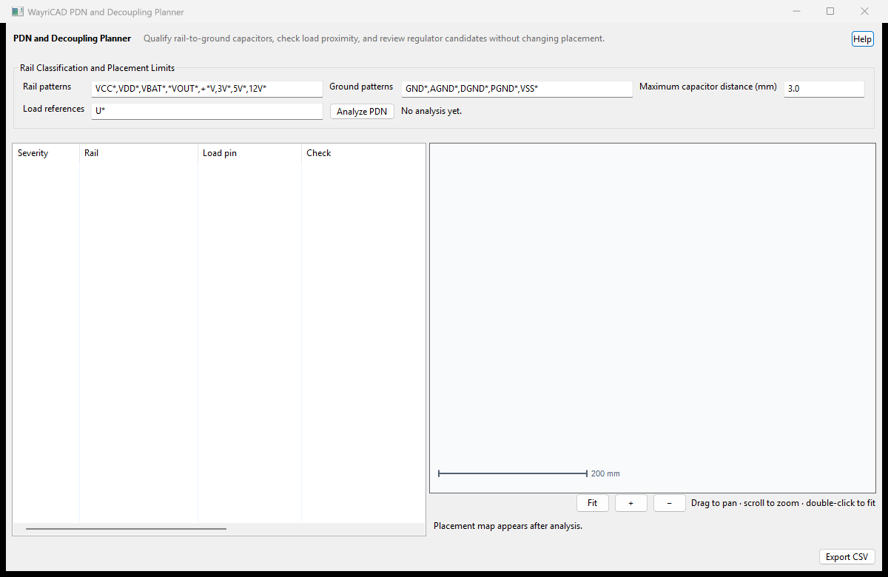

Earlier placement capture retained. The integrated tab now also opens the separate explicit target-impedance screen.
| Workflow | What it establishes |
|---|---|
| Analyze PDN | Matches rail/ground and load patterns; checks whether a candidate capacitor has pads on the rail and configured return, then measures pad-to-pin distance. It does not establish electrical decoupling quality. |
| PDN target impedance / capacitor bank | Calculates an explicit lumped source R/L and capacitor C/ESR/ESL network over a reviewed frequency band. Its values are not extracted from placement. |
For small-signal impedance the ideal voltage source is AC-grounded. At angular frequency ω = 2πf:
Zsource = Rsource + jω LsourceZcap,k = ESRk + jω ESLk + 1/(jω Ck)Zrail = 1 / (1/Zsource + Σ quantityk/Zcap,k)
This is Kirchhoff current balance of parallel admittances. Identical capacitors in parallel multiply admittance by quantity, rather than multiplying ESR or ESL. An isolated part's series resonance is f0 = 1/(2π√(ESL C)); the complete network can also have anti-resonances.
The refined grid uses twice as many log intervals and explicitly includes capacitor self-resonances and lossless pair/source LC resonance candidates. Resistance and other branches can shift the actual peaks. A peak change above 5% requires refinement. SAMPLED_TARGET_MET means only the sampled explicit model met the requested target. Sharp peaks can still lie between samples. A sampled target failure remains a failure even when refinement is incomplete.
No board field extraction, mounting geometry inference, regulator-control dynamics, capacitor-bias model, finite-rise load waveform or thermal qualification is implied. The source R/L and capacitor parasitics must come from reviewed data, measurement or a separately validated field model. Placement distance, a target curve and a transient response answer different questions.